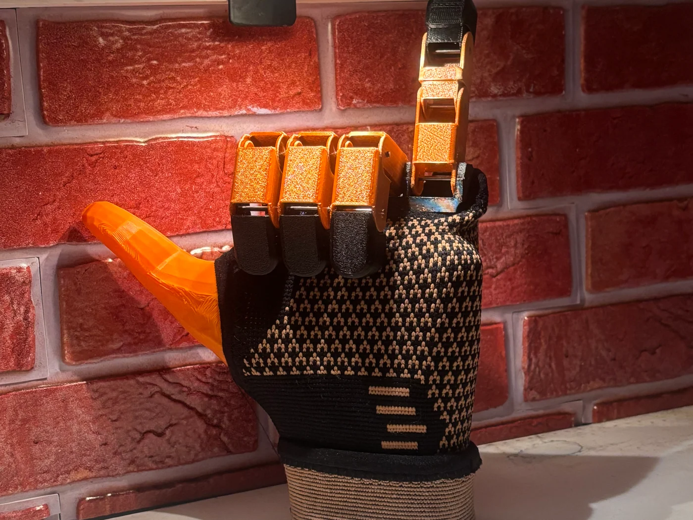
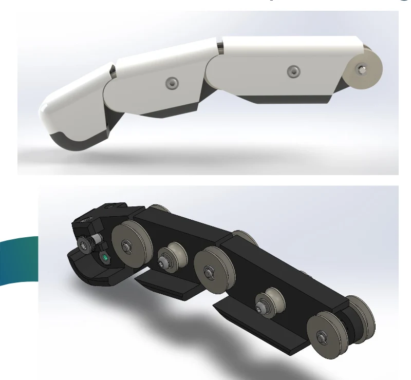
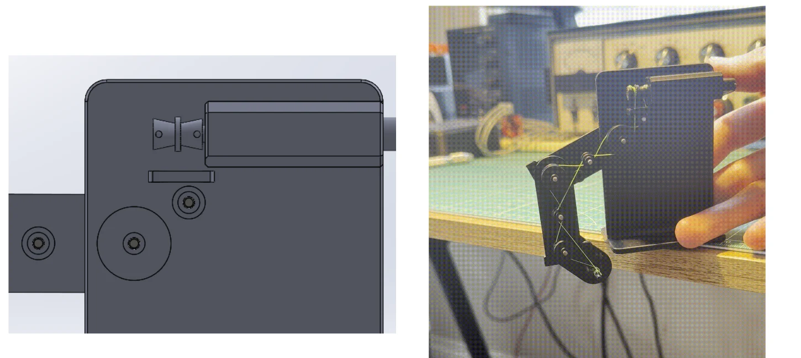
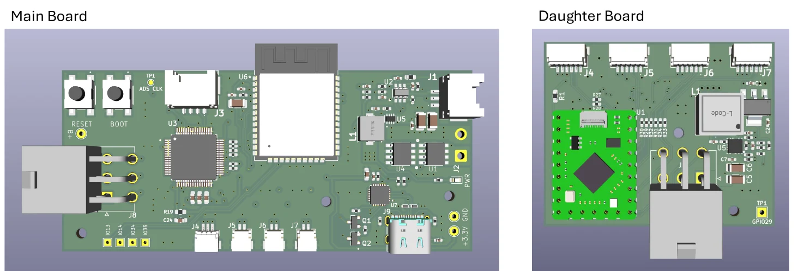
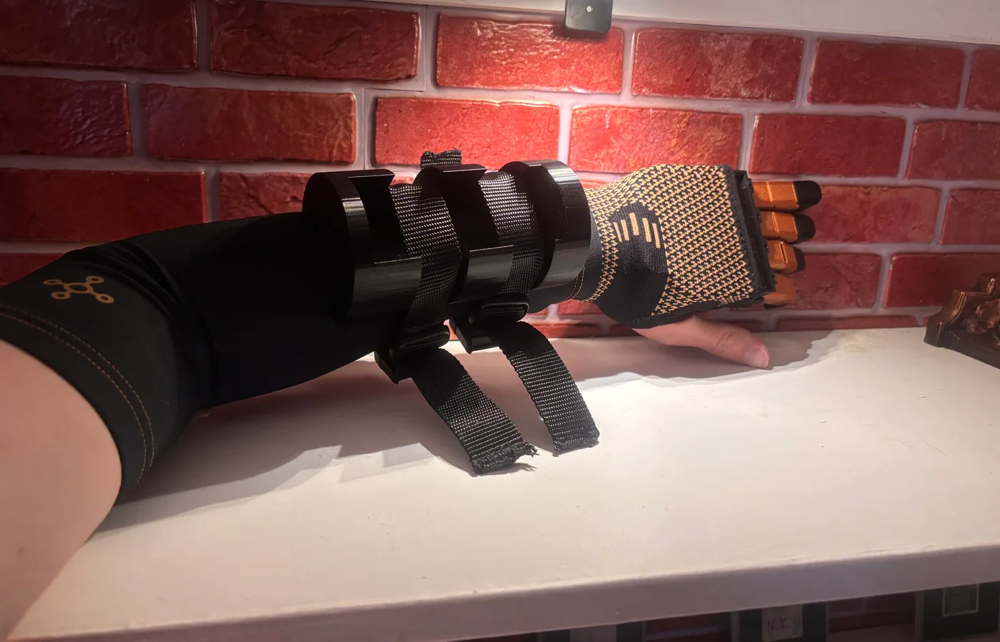
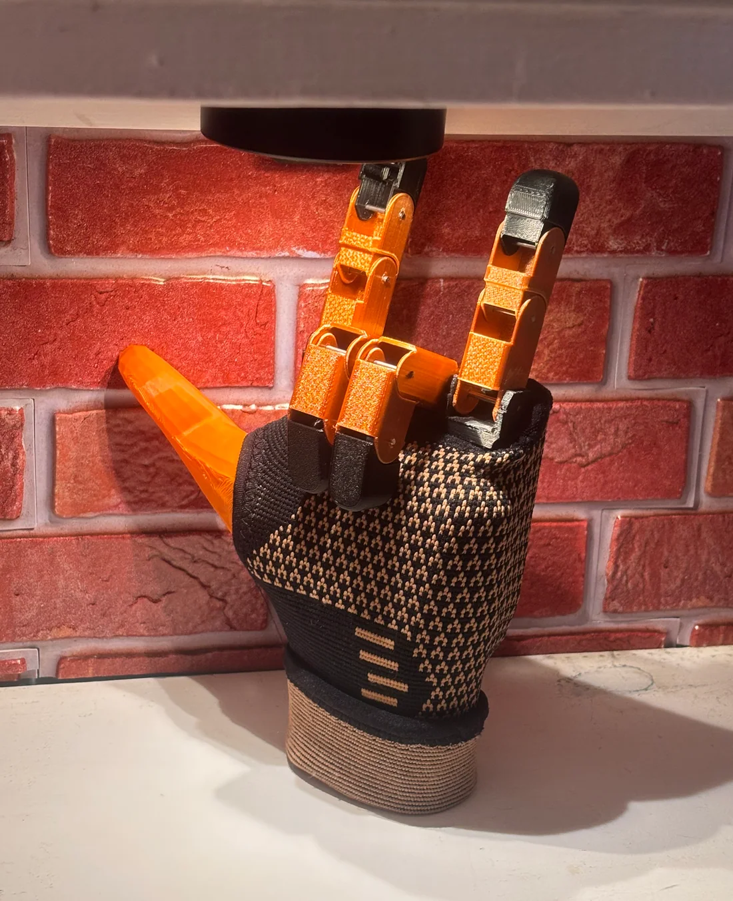
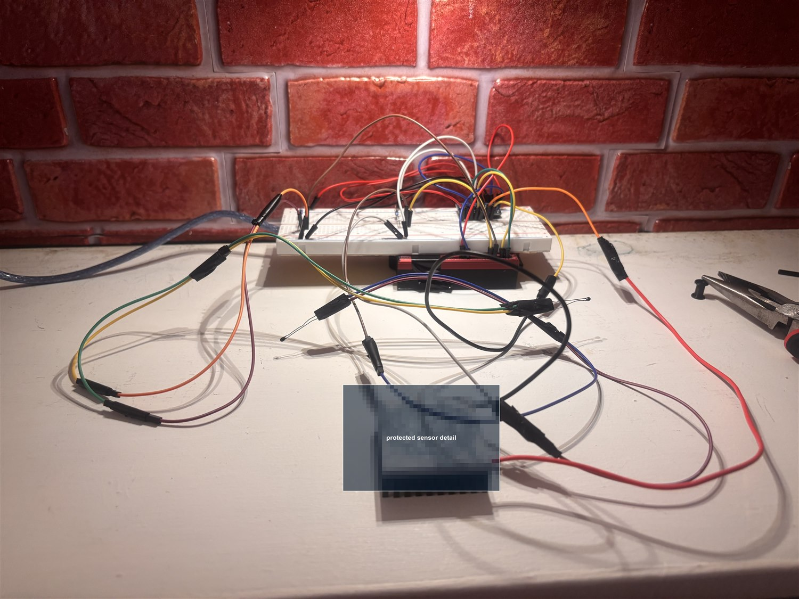
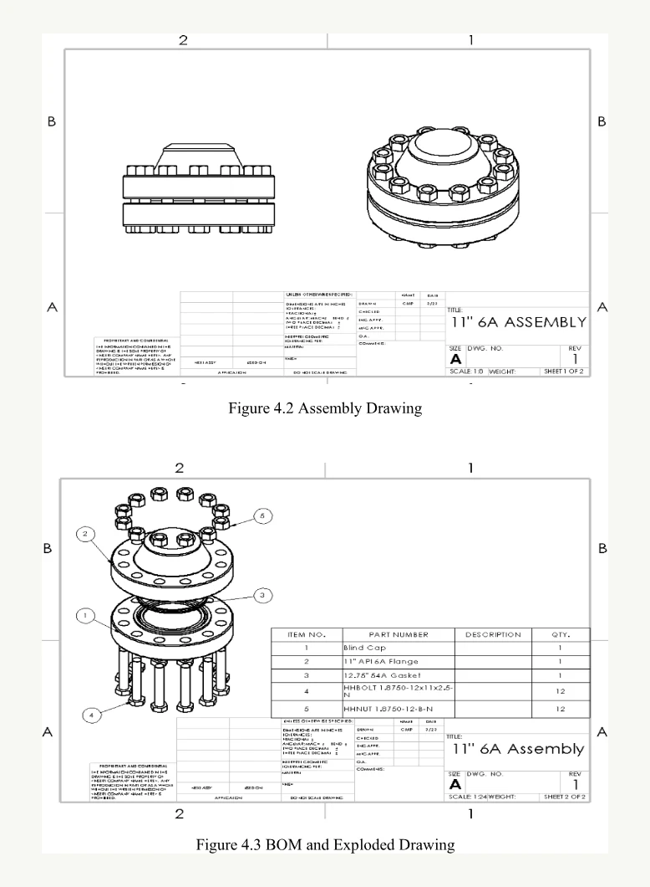

I build systems that turn hard-to-see signals into useful action.
I'm Nolan McMahon, a mechanical engineering senior at Wentworth Institute of Technology.
My work spans assistive technology, thermal diagnostics, finite element analysis,
embedded sensing, and practical prototype development.
My focus: joining mechanical design, simulation, instrumentation, and controls into
prototypes that can be tested honestly—and improved around the people who may rely on them.
Selected work
Selected engineering work
These projects show how I approach mechanical engineering: define the problem, build or
model the system, test it, and use the results to make the next design more credible.

Current prototype · June 2026
Assistive technologyIEEE EMBS nominee
01
PULSE: Myoelectric Partial-Hand Prosthesis
A lightweight, four-finger prosthesis designed to preserve a user's natural thumb while
restoring controlled flexion, extension, and basic grasping.
Three-link, tendon-driven finger architecture
Compact gearmotor actuation and ESP32-based control path
3D-printed, modular construction designed around fit and serviceability
Prosthetic Upper-Limb System with Electromyography
Finger loss can significantly affect grasping and object manipulation, while advanced
prosthetic options can remain costly and difficult to manufacture or repair. PULSE
explores a more accessible partial-hand system built around additive manufacturing,
compact actuation, and myoelectric intent.
Role
Mechanical engineering team member
Tools
SolidWorks, 3D printing, ESP32, EMG, MATLAB/Python
Status
Integrated mechanical prototype; controls and validation in progress
System architecture
From muscle intent to mechanical motion
Surface EMG captures forearm muscle activity. An analog front end conditions the small
biological signal before an ESP32 interprets it and commands individual motor drivers.
Each geared motor tensions a Dyneema tendon routed through a three-link finger.
01EMG electrodesCapture muscle activity
→
02Signal conditioningFilter and form an envelope
→
03ESP32 + driversTranslate intent into commands
→
04Tendon actuationProduce coordinated flexion
Recent design review
Mechanism and electronics refinements
The latest design review focused on improving cable routing, reducing joint friction,
and making the electronics architecture easier to integrate into a wearable system.

Proposed finger redesign with a more rigid internal structure, removable outer shell,
adjustable cable tension at the fingertip, and space for bushings between links.

Pulley arrangement and routing test used to compare CAD assumptions against physical
tendon path behavior.

Finalized PCB direction: main board for processing and EMG signals, daughter board
for motor PWM, with planned support for four EMG channels and four motor outputs.

Wearable integration reveals alignment, clearance, attachment, and comfort constraints that isolated CAD cannot.Compact motor and spool packaging inside the palm housing.

Three-link fingers support coordinated motion and adaptive contact.
Engineering drawing package
Master prosthetic assembly
The assembly drawing documents the four-finger architecture, palm-housing envelope,
cable-routing strategy, motor-housing inlet, and wrist/dorsum interface. It shows the
same kind of dimensioned design communication I would use to move from prototype to
manufacturable revision.
Established finger spacing, pin locations, and motor channels in CAD.
Week 2
Physical mock-up
Converted packaging assumptions into a testable print and exposed hidden clearances.
Week 3
Fit model
Created a repeatable residual-hand model to evaluate the socket and wearable interface.
Weeks 4–5
Subsystem convergence
Refined palm, pulley, motor, PCB, and EMG architecture around integration constraints.
Week 6+
Current prototype
Brought the residual model, housing, fingers, and actuation hardware into one wearable build.
Evidence of function
From biological signal to physical motion
These two demonstrations validate separate parts of the system: the EMG acquisition
path detects forearm muscle activity, while the single-finger mechanism demonstrates
tendon-driven joint motion. The next milestone is joining both into repeatable,
EMG-commanded motion across the integrated four-finger system.
Finger actuation: tendon tension produces coordinated movement through the three-link prototype.EMG acquisition: forearm electrodes produce a visible muscle-activation signal for the control pipeline.
My engineering work
Mechanism, packaging, and analysis
Within the five-person interdisciplinary team, my work has centered on palm-housing and
finger geometry, physical prototyping, tendon and return-mechanism development,
component integration, and analytical modeling that relates motor torque to fingertip
force through the finger Jacobian.
Responsible development
Accessibility does not excuse weak validation.
PULSE is a student research prototype—not a clinically approved medical device. Future
work requires measured grip force, cycle life, safe-state behavior, electrical and
battery checks, fit and pressure evaluation, and appropriate clinical/user oversight.
External milestone
On June 17, 2026, PULSE was selected as one of Wentworth Institute of Technology's
nominees for the 2026 IEEE EMBS Boston Senior Capstone Project Award.
Case study 02 · Independent project
Protected server thermal diagnostics
This project investigates how localized cooling-path changes inside critical servers can
be detected earlier through instrumented hardware validation and simulation. Specific
sensing architecture and implementation details are intentionally withheld for IP protection.
Protected independent R&D with physical server testing completed
01
The gap
Standard temperature monitoring can miss the early story of why a cooling path is degrading.
02
The approach
Instrument the server environment, compare measured behavior against expected thermal response, and protect the sensing method itself.
03
The validation
Pair bench and server testing with SolidWorks geometry and ANSYS Fluent CFD to understand airflow and thermal behavior.
Physical validation inside a Dell EMC PowerEdge R450 server. Sensitive sensor details are intentionally obscured.
Physical validation · June 2026
Real server hardware, protected implementation.
The project moved beyond concept sketches into a real server environment, with an
instrumented setup used to evaluate cooling-path behavior under practical packaging,
airflow, wiring, and serviceability constraints.
Dell EMCPowerEdge R450 validation platform
ANSYSFluent CFD workflow for airflow comparison
SolidWorksServer geometry modeled for simulation handoff
ProtectedSensor architecture withheld from public release
Simulation and instrumentation
Built to connect physical testing with CFD.
The public version of this case study focuses on the engineering workflow: create a
testable server setup, collect diagnostic data, model the server geometry in SolidWorks,
and use ANSYS Fluent to compare airflow and thermal behavior. The protected sensing
method is deliberately excluded from the public portfolio.
Server-mounted validation under realistic packaging constraints
Bench instrumentation used to refine the data-acquisition workflow
CFD-informed comparison of airflow and thermal behavior
Public photos edited to obscure protected hardware details

Bench instrumentation photo with protected sensing hardware intentionally obscured.
Case study 03 · Engineering analysis
FEA
High-pressure flange assembly simulation
For Simulation-Based Design, I analyzed an 11 in API 6A Type 6B flange assembly rated
for 5000 psi. The study connected standards-based geometry, hand calculations, contact
setup, bolt preload, and finite element results into one structural validation workflow.
Model
Flange, cap, RTJ gasket, 12-bolt connection
Tools
SolidWorks, SolidWorks Simulation, hand calculations
Created the flange, blind cap, ring-type joint gasket, studs, and nuts from API-style dimensional requirements.
02
Defined the physics
Used bolt connectors, preload, contact interactions, a fixed lower flange, and pressure on internal fluid-facing surfaces.
03
Interpreted results
Compared bolt-force, displacement, and stress trends against hand calculations and recognized where a sharp-edge singularity distorted peak stress.
SolidWorks Simulation results for the proof-pressure case, including von Mises and displacement plots.
Analysis workflow
FEA treated as engineering evidence, not decoration.
The project evaluated how the bolted joint reacts as pressure increases from a
preload-only baseline to 5000 psi operating pressure and 7500 psi proof pressure. The
important result was the trend: internal pressure increased bolt axial force and joint
separation tendency, making controlled preload critical to sealing performance.
11 inAPI 6A Type 6B flange assembly
12Bolt connectors used for preload behavior
5000 psiOperating pressure load case
7500 psiProof-pressure load case
Design communication
Simulation started from documented geometry.
The report included assembly drawings, an exploded view, a bill of materials, and
component drawings so the simulation model could be understood as an actual mechanical
assembly rather than an isolated stress plot.

Assembly drawing and exploded view used to communicate the modeled flange, cap, gasket, and bolted joint.
Investigated vehicle collisions and mechanical failures, interpreted physical and digital evidence, and prepared code-compliance documentation for engineering review.
Integra Mission Critical · Austin, TX
Commissioning Intern
Supported commissioning of a live 80 MW data center, tracked more than 400 system logs, and identified installation and safety issues before energization and startup.
Wentworth Institute of Technology · Boston, MA
B.S. Mechanical Engineering
Coursework and project work in heat transfer, fluid mechanics, CFD, FEA, mechanical vibrations, mechanical design, additive manufacturing, instrumentation, and embedded systems.
About me
I like engineering work that has to hold up outside the classroom.
I am drawn to projects where mechanical design, simulation, instrumentation, and
hands-on testing all have to line up. My process is practical: understand the system,
make the first version testable, measure what actually happens, and use the failure
modes to improve the next revision.